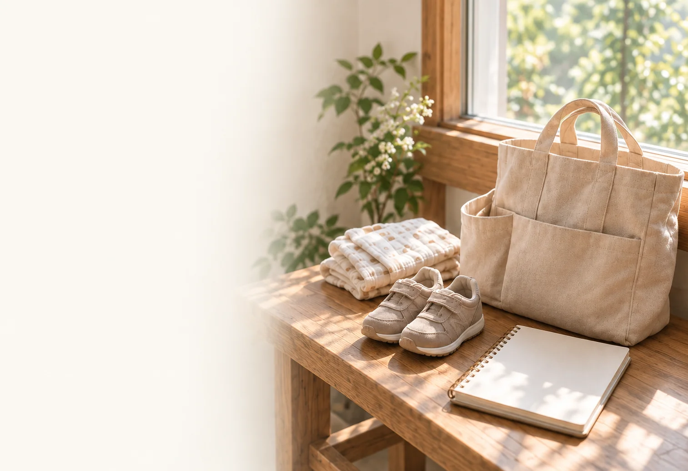
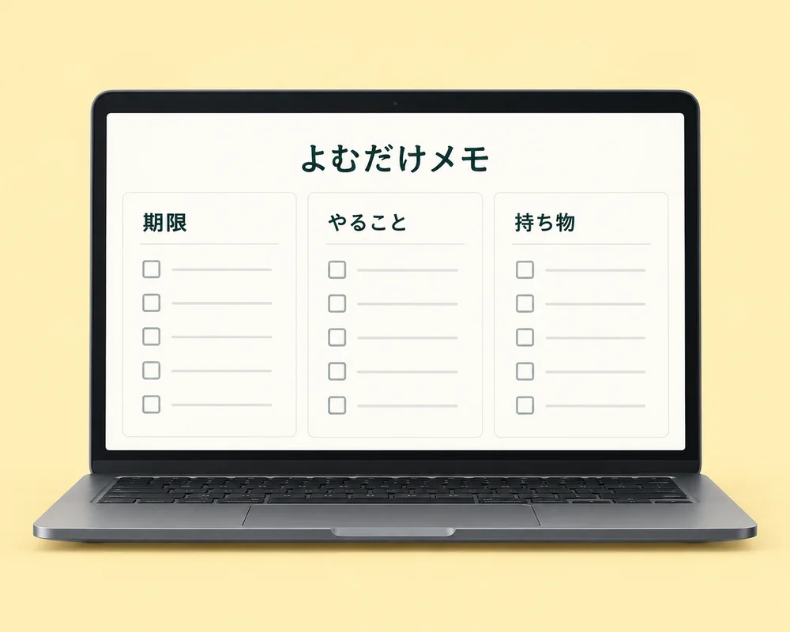

子育てと暮らしの、無料ツールとメモ。
子育ての「どうしよう」を、
ひとつずつ。
おむつの買い置き、服のサイズ、お出かけの持ち物。
気になることを、ここで確認。
無料ツールを一覧から探す
- ベビーサークル置ける？部屋サイズ診断ツール｜買う前の配置チェック
- 育児消耗品ストック管理ツール｜おむつ・おしりふき・ミルクの買い足し目安
- ブログ収益導線 無料診断｜10問で改善点を確認
- 買う前タイムマシン診断｜育児グッズの後悔タイプをチェック
- チャイルドシート乗せ降ろし診断ツール｜車内スペース・ドア開口チェック
- 子育て家計メモ｜育児まわりの支出をかんたん整理
- おむつサイズ＆買い置きチェック｜身長・体重から在庫目安
- わが家の暮らし計画ボード｜土地・間取り・総予算をひとつに整理
- 子連れ宿・食事さがしナビ｜ファミリー向け条件で横断検索
- 40代ママの運動ウェア迷子診断｜体型カバー・ヨガ・ウォーキングの選び方
- ふるさと納税 控除上限額かんたん確認メモ｜会社員・副業あり対応
- 扶養・副業・手取りかんたん判定｜年収の壁と確定申告の確認メモ
- 住宅計画シミュレーター｜敷地・建坪・雪置き場・平面図・3Dパース
- 家づくり総予算シミュレーター｜市区町村別の土地坪単価・世帯年収・住宅ローン返済を確認
- 子ども服サイズ計算｜身長から服・靴の目安をメーカー別チェック
- 土地候補比較メモ｜敷地・雪置き場・駐車・生活条件を並べて確認
- 迷ったらここから｜暮らしの困りごとから探す
- 子連れおでかけ持ち物チェックリスト｜画像保存・コピー対応
- 入園・入学準備チェックリスト｜名前つけ・買うもの管理
- ベビーカー入る？玄関・車トランク診断ツール｜収納と持ち運びチェック
- リビング散らかりタイプ診断｜おもちゃ収納の戻す場所チェック
- 会社員の年末調整申告書作成サポート｜公式様式PDF・住宅ローン控除計算
税金・住宅などの計算は概算です。各ページの条件・注意事項もご確認ください。
暮らしの中で、確かめたこと。

写真は暮らしのイメージです。記事をすべて見る
すべての記事を一覧から探す
- 子どもの服、買いすぎていない？賢いママがUSED子供服を選ぶ理由
- 赤ちゃんのおでかけ持ち物は何が必要？月齢・季節・移動手段別に確認
- ベビーサークルは何畳必要？リビングに置けるサイズと安全対策
- 赤ちゃんの保湿ローションはどう選ぶ？毎日続けやすいスキンケア
- 出産祝いに迷ったらかみかみチキン一択。Berpyベビーグッズ正直レビュー
- 買う前に確認したいこと｜育児グッズ後悔タイプ診断
- 届いたあとの暮らしを見る｜育児グッズの買う前チェック
- サイベックス パラスG3を実際に買ってよかった理由。乗せ降ろしがラクなチャイルドシート
- おむつサイズはいつまで使える？身長・体重・買い置きの考え方
- 親子イベントでカードをかざすと動く？WebARカード活用メモ
- ペットの写真から3Dフィギュアを作れるdigxipop。愛犬・愛猫を形に残すメモリアルギフト
- ハイハイ前にやっておきたい安全な部屋づくり。DoriDoriのベビーグッズが助かった理由
- ロボットクリーナーはレンタルで試すのが安心？ダスキンのおそうじロボットを紹介
- 0歳から使える英語DVD、本当に効果ある？1児のママが正直レビュー
- チャイルドシートの乗せ降ろし・ベビーカー収納｜買う前チェック
- 子連れ宿・食事の探し方｜小さい子と行きやすい条件まとめ
- 40代ママの運動が続かない理由｜服・時間・気分の整え方
- 北海道で家を建てる記録 第1回｜土地探しで雪置き場を甘く見ていた話
- 鼻水吸引器、わが家で使いやすかったポイント｜HuBDIC吸引キットのメモ
- HYACCA（ヒャッカ）の結婚祝い・出産祝い｜選び方と注意点
- 子育て家庭のリビング家具選び｜模様替え前に見るところ
- 引越し前に知っておきたい家電レンタル。かして！どっとこむが新生活に選ばれる理由
- 子ども服と靴のサイズ選び｜買い替えサインと買いすぎ防止
- 2歳連れの温泉宿は「お風呂」と「寝床」で決める｜北海道・登別で実感した選び方
- LEANYのフィットネスウェアは40代ママにも着やすい？運動再開前のウェア選びメモ
- ママ＆キッズ ミルキーローションは赤ちゃん保湿に使いやすい？利用者の声をMIO目線で整理
- 扶養・副業・年末調整・ふるさと納税 まず見る順番｜お金まわり確認ガイド
- 子育ての朝がバタバタする理由｜出発前5分で詰まりやすい場所
- 子どもを見守りたいママへ。myFirst Foneが「GPS＋スマホの一番いいとこどり」な理由
- テレワークのパソコンレンタル｜短期・個人利用で確認するポイント
- おむつ替えにペットシーツが便利だった理由｜ワイドサイズ150枚をママ目線レビュー
- 広めのベビーサークルを探すなら？popomi TREE 180×200cmをママ目線でチェック
- 子どもの野菜不足が気になる時に。ごはんに混ぜるサラダまんまをママ目線で紹介
- 入園準備の名前つけは何から始める？持ち物・シール・スタンプ整理
- 入園・入学準備のお名前シールは必要？シールDEネームを使って感じたラクさ
- 40代ママの自分ケア・運動再開まとめ｜服で止まらないための小さな入口
- 副業の確定申告準備メモ｜売上・経費・源泉徴収・住民税の確認
- TikTok Shopとは？安全性・買い方・クーポンの注意点を解説
- リビングのおもちゃ収納はどこに置く？散らからない収納6タイプ
よむだけメモ
お知らせの期限・やること・持ち物を整理。
お知らせから
提出はいつまで？
何を持っていく？
誰の予定だった？
項目ごとに整理
- 期限
- やること
- 持ち物
